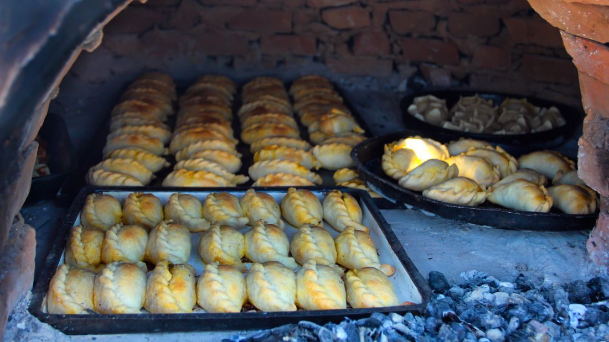
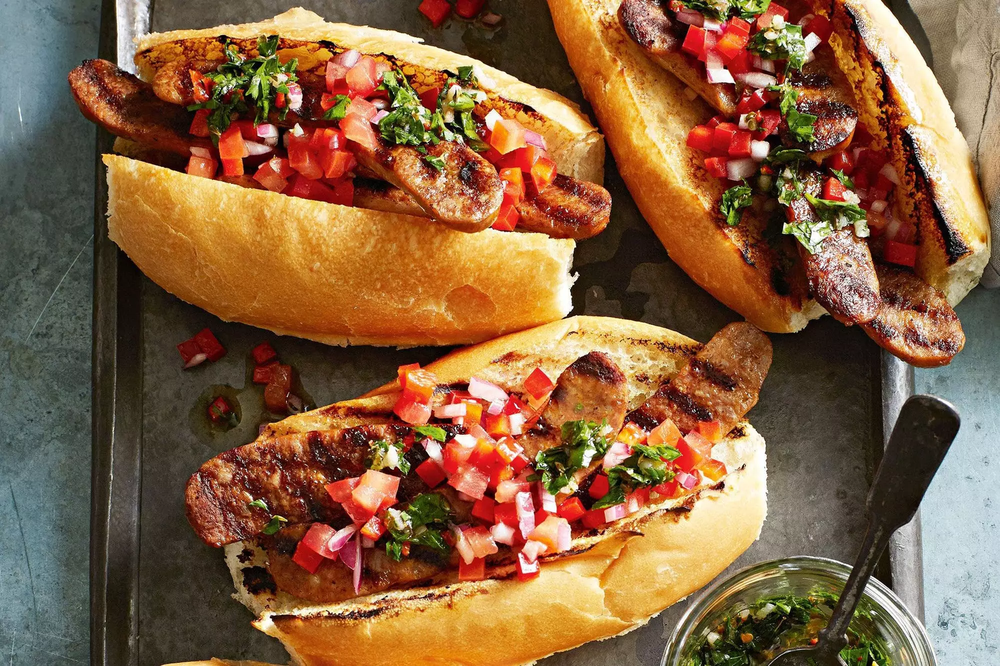

¿Cuales son Las Comidas tipicas?
Si bien la carne de res es la columna vertebral de la dieta diaria argentina, hay muchos otros manjares que te esperan en el octavo país más grande del mundo. Además del legado de los inmigrantes italianos y españoles, los platos argentinos también incluyen ingredientes del noroeste andino y de la Patagonia al sur.

La comida callejera favorita de Argentina, estos bocadillos rellenos son parecidos a la empanadilla de Puerto Rico o las empanadas de Cornualles.
Las empanadas vienen horneadas o fritas y pueden ser veganas o carnívoras.
Los rellenos comunes incluyen pollo, queso y jamón, maíz dulce, queso caprese o azul. La carne de vacuno, ya sea picada o cortada a mano, es siempre una opción popular, aunque los condimentos como el comino, la cebolleta, el huevo o la papa hervida dependen de la provincia de origen.
La carne de res, ya sea picada o deshebrada, es siempre una opción popular, aunque los condimentos como el comino, la cebolleta, el huevo o la papa dependen de la provincia de origen.

Otra popular comida callejera barata y deliciosa, el choripán se suele servir como entrante de un asado.
Pero gracias a su forma práctica, esta especie de emparedado (donde el chorizo o la salchicha se combinan con pan) es un aperitivo ideal para los viajeros en movimiento. Puedes agregarle chimichurri (una salsa hecha de orégano, perejil, ajo, hojuelas de chile y vinagre de vino tinto) o una salsa criolla, una variante de tomate, cebolla y pimiento rojo.